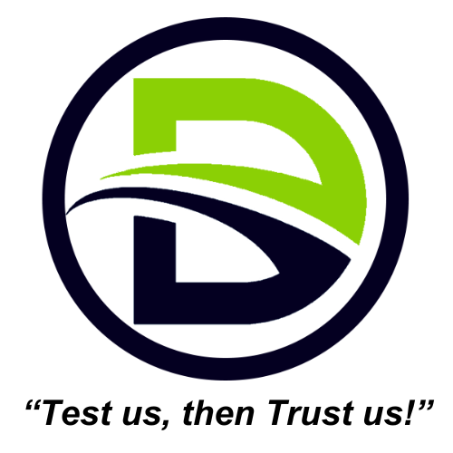

MERN Stack Developer Intern
Daya Consultancy Services (OPC) Pvt. Ltd.
Feb 2024 - Ongoing
- Spearheaded the advancement of the E-Learning platform to Version 2, tailoring advanced features to meet diverse user needs, streamline admin access, and enhance dynamic content handling.
- Project Version 2 has been designed to be 80% more powerful than its predecessor, accommodating over 100,000 users, and enabling seamless content sharing with multiple vendors.